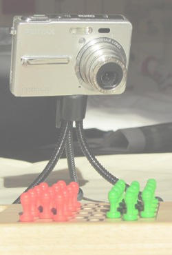
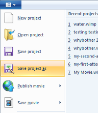
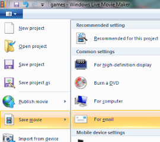

Welcome!
Select steps below for help with making your stop motion animation video.
Have fun!
Step 1 - View some sample animations Step 2 - Take your stills Step 3 - Copy stills onto your computer Step 4 - Make a basic video Step 5 - Enhance your video Step 6 - Share your video
The workshop has been devised to engage students in a fun and creative activity where they produce a short stop motion animation video (10-20 secs) and post it to YouTube. The students thus learn how to use contemporary digital technologies whilst engaged in the construction of digital objects. Click below for some hints on how to use this workshop.
This activity can be used in a single class (allow at least 2 hours) or over a number of classes. The students may work independently or collaboratively, but are strongly encouraged to help each other and exchange ideas. If time permits the students may make a number of different videos - they will gain more knowledge and confidence as they iterate through the process.
Encourage students to come up with their own ideas, but some handy ideas are:
Coloured items show up well in the end-product, especially if offset against a plain background.
Ownership of the video rests with the creator. Videos posted onto YouTube will be analysed by YouTube and music segments may be identified and attributed to the music artist. Using music segments in this way is allowed by YouTube as the videos (for the most part) only use music segments of approx 20 secs and the videos have no commercial value.
Have a look at these samples of short stop motion animations. They're not going to win any awards - but they were were fun to make and quick!
Here are some guidelines for taking your stills:
Create a new folder (under Pictures) and minimise the window. Connect your camera and access the folder containing the stills just taken.
Copy the stills into the folder on your computer.
Click below for more help on each of these steps.
Use Windows Movie Maker to make a basic video. Add the stills to a new project under Movie Maker, edit them to remove any unwanted stills, set the duration for each still to 0.2 secs and view results!
Click below for more help on each of these steps.
It is a good idea to save your project now and remember to save regularly as you work.
To save:

You are now ready to make the video.
Aside: You can change the duration of the display of any single still simply by just selecting that still and then modifying the duration. For this stop motion animation a duration of 0.2 secs for all stills creates a sense of motion.

You may like to enhance your video by adding music, titles and credits. Select the options below to find out how.
Publish your video on YouTube. You can do this though your own account or through the account set up for this class.
Well done!